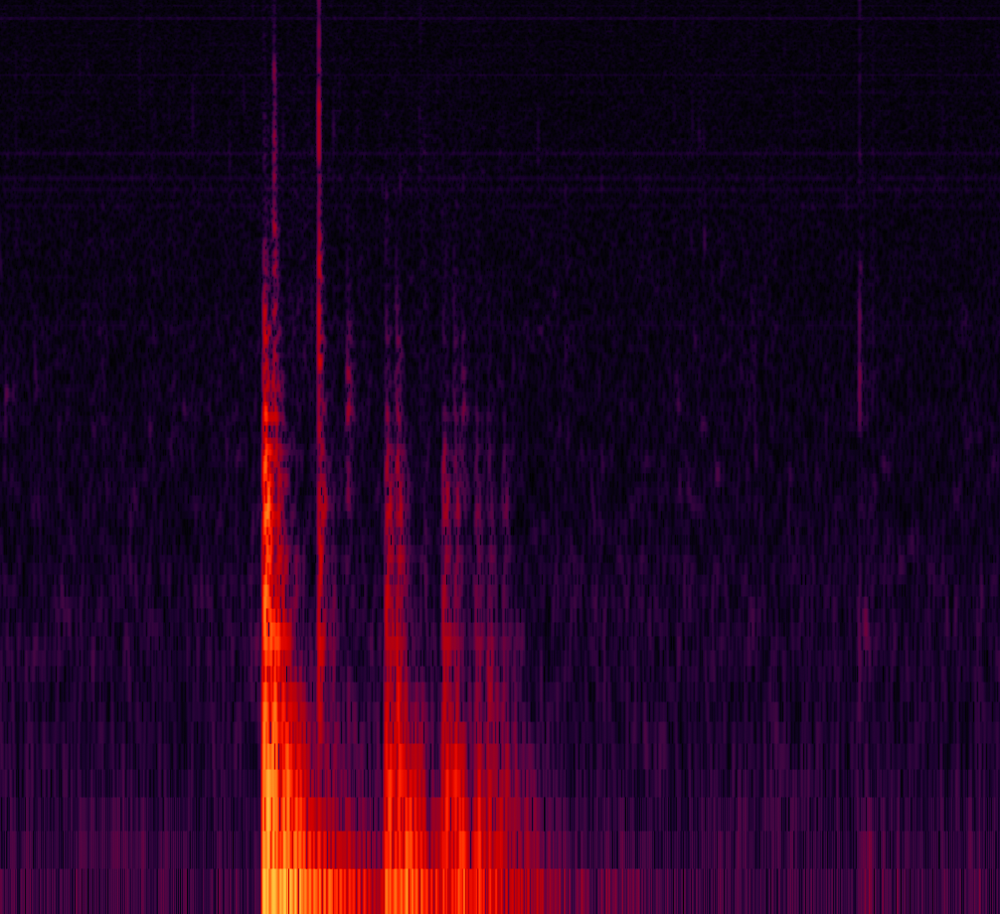
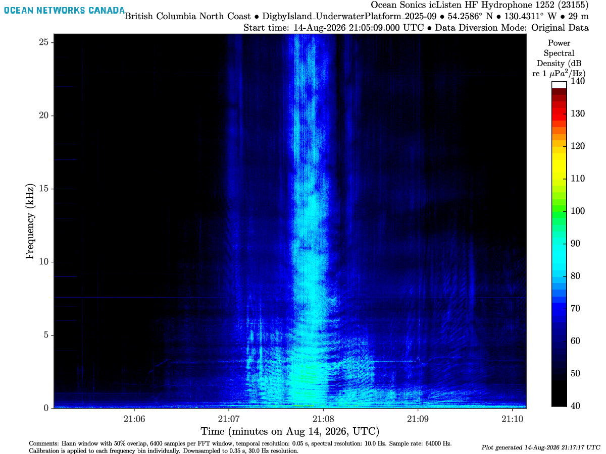
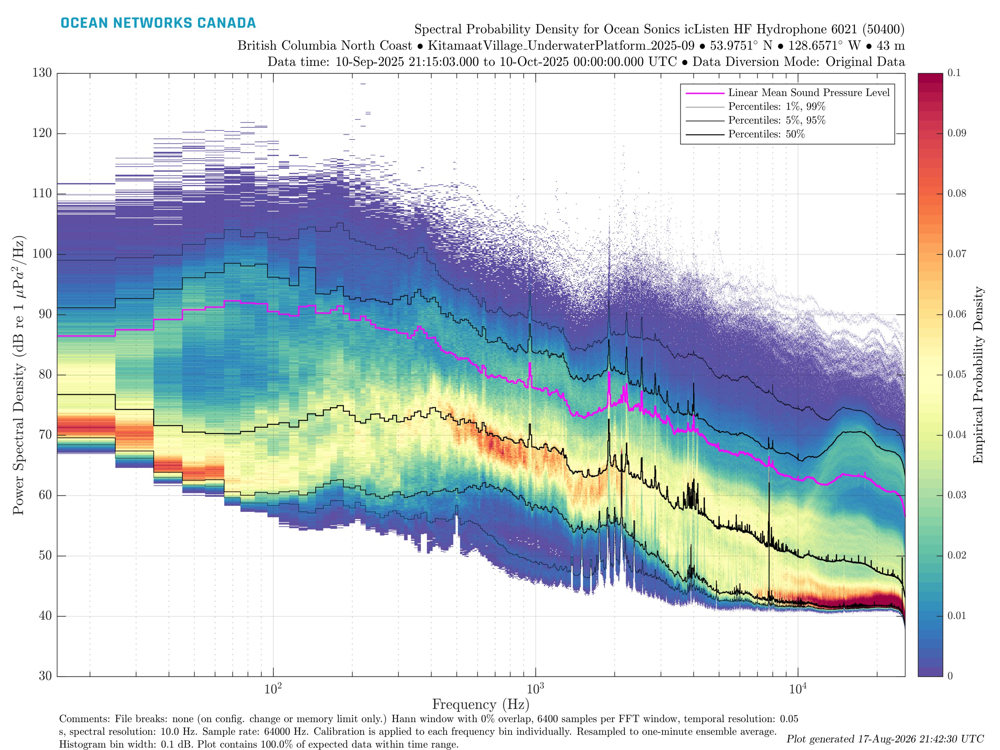
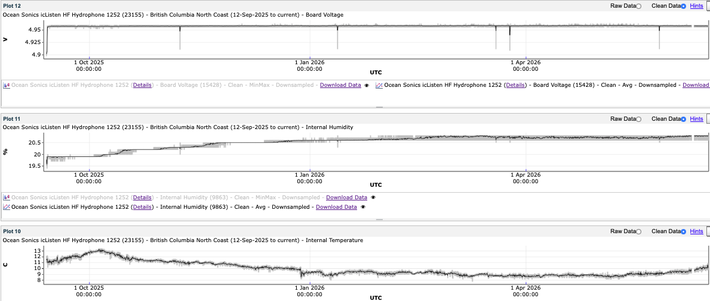

11. Data Products
This page describes what each hydrophone data product contains. To download files, use the Data Access request builder or Hydrophone Viewer.
Overview
Hydrophone data is archived several formats, ranging from raw acoustic recordings to processed spectral products.
Each device has a collection of files for every 5 minutes of recording:
| Description | Data Product Code | Data Product ID | File Extension |
|---|---|---|---|
| Raw Audio Data (lossless) | AD | 7 | .flac |
| Raw Audio Data (lossless) | AD | 7 | .wav |
| Raw Audio Data (with loss) | AD | 7 | .mp3 |
| Hydrophone Array Raw Data (IOS arrays, retired) | HARD | 38 | .hyd |
| Proprietary Spectral Data (Ocean Sonics only) | HSD | 45 | .fft |
| Processed Spectral Data | HSD | 45 | .mat |
| Spectrogram | HSD | 45 | .png, .pdf |
| 1/3-octave spectral data (JASCO / GeoSpectrum) | HSD | 45 | .oct |
| Spectral Probability Density | HSPD | 51 | .png, .pdf, .mat |
| Log / auxiliary file | LF | 4 | .txt |
| Hydrophone Acceleration Data | HACC | 128 | .acc |
Note that both Data Product Code and File Extension are needed when downloading data through the API. Each data product (dataProductCode) has a set of data product options (dpo_*) that can be used to narrow down the request.
Audio Data

Audio data is the raw recording of the acoustic environment.
Older files were stored as .wav, but ONC now archives lossless .flac. The .mp3 format is smaller but lossy, and is not recommended for scientific work. Retired IOS arrays used HARD / 38 (.hyd) instead of AD.
Why FLAC is the preferred format?
- Lossless compression: unlike MP3, FLAC keeps 100% of the original samples.
- Storage efficiency: files are substantially smaller than
.wavat the same quality. - Metadata: FLAC can store deployment and device tags inside the file.
dpo_audioDownsample:"-1"(default, native rate),"256","512","2000","4000","8000","16000","44100","48000"dpo_audioFormatConversion:"0"(default),"1"dpo_hydrophoneAcquisitionMode:"All"(default),"LF","HF"dpo_hydrophoneChannel:"H1"(default),"H2","H3","All"dpo_hydrophoneDataDiversionMode:"OD"(default, original data),"LPF","HPF","All"
Hydrophone Spectral Data

Spectral products turn audio files into frequency vs time data. To access the data, one can go to the Hydrophone Viewer where each 5-min audio file was turned into a spectrogram (.png). This data product is a practical way for quick-checks without processing terabytes of raw audio. It comes in several formats:
.mat — processed spectral data. MATLAB data format of 1-minute averaged calibrated spectral data with the device-specific sensitivity curve. Contains a SpectData structure with frequency bins (Hz) and power spectral density.
.png / .pdf — spectrogram. A 2D heatmap of sound: time on the x-axis, frequency (Hz) on the y-axis, colour as sound level in \(\text{dB re } 1~\mu\mathrm{Pa}^2/\mathrm{Hz}\).
.fft — proprietary spectral data (Ocean Sonics only). Broadband spectrogram files, roughly a raw version of the plot. They use a single broadband sensitivity (around −165 to −170 dB) rather than a frequency-dependent calibration curve, so they are preliminary and unfit for scientific research.
A spectrogram is built from short Fourier transforms of the audio:
- Time windowing: raw audio is split into finite segments with a window (ONC uses a Hann window) to limit spectral leakage.
- FFT: each segment is transformed from the time domain to the frequency domain.
- Overlap / averaging: successive windows overlap (typically 50%) so energy at the edges is not lost.
- Calibration: values are converted to micropascals with the device-specific frequency-dependent calibration curve. Using the wrong curve has caused errors in the past (internal note).
Fourier transforms assume an infinite, stationary signal. A finite cut creates edge discontinuities and spectral leakage into neighbouring bins. Windowing (tapering) multiplies the segment by a shape that goes to zero at the edges.
Choosing the right window is not easy due to the Heisenberg uncertainty principle: you cannot have perfect time and frequency resolution at once.
- Narrow window: good time resolution (when a click happened), poor frequency resolution.
- Wide window: good frequency resolution (harmonics of a call), poor time resolution.
- Wavelengths longer than the window are lost.
ONC spectrogram settings in the example above:
- Hann window with 50% overlap
- 6400 samples per FFT window
- Temporal resolution: 0.05 s
- Sample rate: 64000 Hz
dpo_hydrophoneAcquisitionMode:"All"(default),"LF","HF"dpo_hydrophoneChannel:"H1"(default),"H2","H3","All"dpo_hydrophoneDataDiversionMode:"OD"(default, original data),"LPF","HPF","All"dpo_spectrogramSource(PNG/PDF):"MIX"(default, audio preferred, FFT fills gaps),"WAVFLAC","FFT"dpo_spectrogramConcatenation:"None"(default for PNG/PDF),"Concatenate"(default for MAT),"Daily","Weekly","Adjacent"(PNG/PDF, searches of 5 minutes or less)dpo_spectralDataDownsample(MAT):"1"(default, one-minute, pre-generated),"2"(spectrogram resolution),"0"(full resolution)dpo_spectrogramColourPalette(PNG/PDF):"0"(default),"1","2","3","4","5"dpo_lowerColourLimit/dpo_upperColourLimit(PNG/PDF):"-1000"(default, use device calibration); otherwise −160 to 140dpo_spectrogramFrequencyUpperLimit(PNG/PDF):"-1"(default, use calibration / sample rate); otherwise 100 to 500000 Hz
Spectral Probability Density

The Spectral Probability Density is a statistical view of long-term ambient noise, originally proposed by Merchant et al. (2013). It counts how often a given dB level occurs in each frequency bin. Use it to see the persistent noise floor rather than a single 5-minute snapshot.
The mean square value in frequency range \((f, \Delta f)\) is:
\[ \Psi^2_x(f,\Delta f) = \lim_{T\rightarrow \infty} \frac{1}{T} \int_0^T x(t,f,\Delta f)^2 dt \]
Power spectral density is approximately \(\Psi^2_x(f,\Delta f) \approx G_x(f) \Delta f\):
\[ G_x(f) = \lim_{\Delta f \rightarrow 0} \frac{\Psi^2_x(f,\Delta f)}{\Delta f} = \lim_{\Delta f\rightarrow 0} \frac{1}{\Delta f} \left[ \lim_{T\rightarrow \infty} \frac{1}{T} \int_0^T x(t,f,\Delta f)^2 dt \right] \]
HSPD then histograms those levels per frequency bin over a long window, so the colour is occupancy (how often that level occurs), not a single spectrogram frame.
dpo_filePlotBreaks:"0"None (configuration changes only),"1"Daily,"2"Weekly (default),"3"Hourly,"4"Monthly,"5"Yearlydpo_hydrophoneAcquisitionMode:"All"(default),"LF","HF"dpo_hydrophoneChannel:"H1"(default),"H2","H3","All"dpo_hydrophoneDataDiversionMode:"OD"(default, original data),"LPF","HPF","All"dpo_spectralProbabilityDensityColourAxisUpperLimit:"0"(default),"0.05","0.1","0.12","0.25","0.5","1.0"dpo_spectralProbabilityDensityPSDRange:"0"(default),"40_160","40_140","20_140"
Auxiliary Data

Auxiliary (ancillary) files are about the instrument, not the soundscape: internal humidity, temperature, battery, voltage, and related engineering scalars. Use them to diagnose leakage (humidity above about 50%), overheating, or a dying battery. Magnetic flux and acceleration can also indicate orientation and strong currents.
These data are only available for Ocean Sonics hydrophones.
LF (.txt) and HACC (.acc) have no extra dpo_* options. There is no single AUX code: order LF for the engineering log and HACC for acceleration. Calibration files use HCF.
Useful links
- Hydrophone MATLAB Post-process Jobs
- Data Product: Audio Data (7)
- Data Product: Hydrophone Spectral Data (45)
- Data Product: Hydrophone Spectral Probability Density (51)
- Data Product: Spectrogram For Hydrophone Viewer (146)
- Data Product: Hydrophone Acceleration Data (128)
- Data Product: Log File (4)
- Passive acoustics data products (internal)